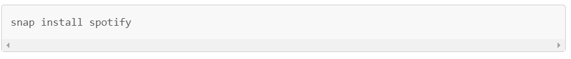
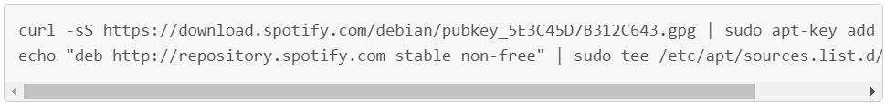
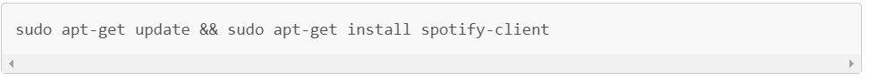

Here you can find different ways of installing Spotify for Linux. Spotify for Linux is a labor of love from our engineers that wanted to listen to Spotify on their Linux development machines. They work on it in their spare time and it is currently not a platform that we actively support. The experience may differ from our other Spotify Desktop clients, such as Windows and Mac. You can tell us what you think and ask other users for help at the Desktop (Linux) board in The Spotify Community forum.
Go to Spotify in Ubuntu Software and click install. If the link doesn’t work, open Ubuntu Software and search for Spotify.
If you don’t have access or don’t want to use Ubuntu Software, it is possible to install Spotify from the command line with snap. Run the following command in your terminal:

If you run another Linux distribution than Ubuntu, first see https://snapcraft.io/ for how to install snap, then run the command above.
Spotify for Linux is also released as a Debian package. Our aim is that it should work with the latest Long Term Support release of Ubuntu, but we will try to make it work for other releases of Ubuntu and Debian as well. You will first need to configure our debian repository:

Then you can install the Spotify client:
